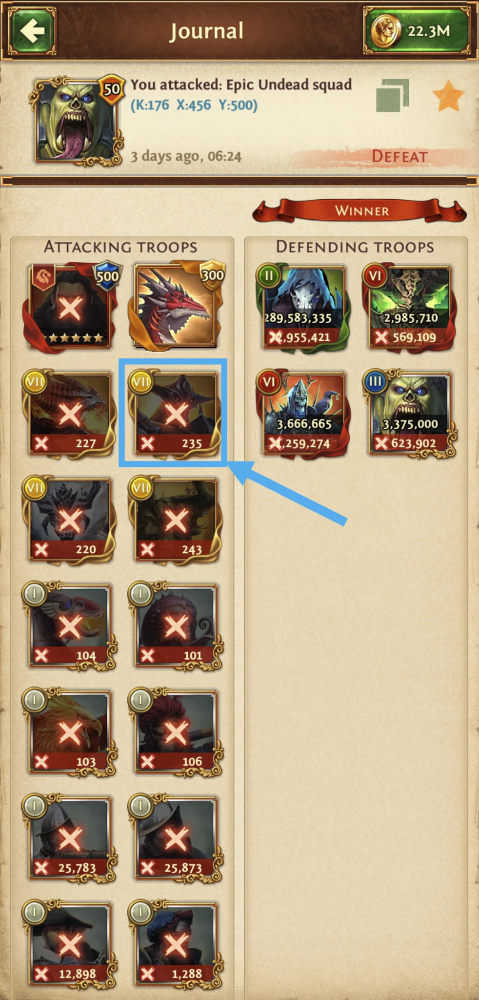
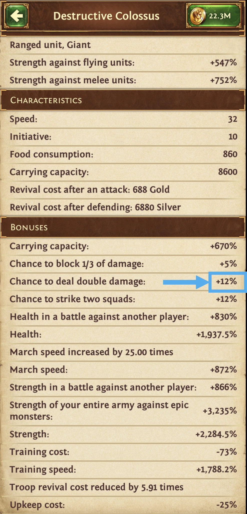
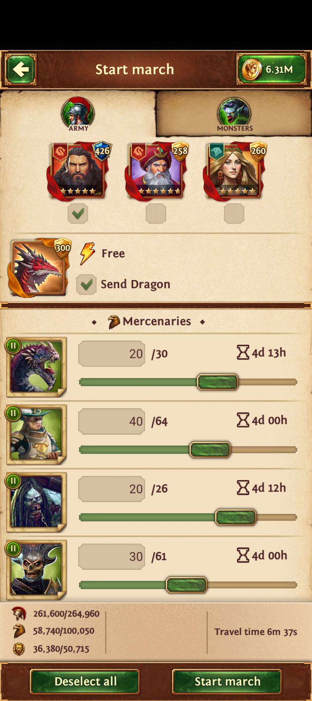

What is stacking?
Stacking means choosing unit types and quantities so your squads are defeated in a useful order. Squads that survive longer may have more opportunities to attack. The calculator tests possible army structures and estimates expected lifetime damage (ELD) across the predicted battle. That estimate helps compare setups; it does not guarantee the damage of one march.
There is no universal best stack. Your available units, army limits, bonuses, and encounter all matter.
Before you start: measure your battle bonuses
Send a preliminary army into the Epic encounter using the Captain(s) and/or Hero, armor, gems, enchantments, and artifacts you plan to use. Open its battle report and select one of your units—not an enemy squad. In that unit's Bonuses section, record Double Damage, Strike Twice, Health, Strength, and “Strength of your entire army against epic monsters” (Strength PvE). Recheck these values whenever you change your battle setup.




If you have completed Army Modernization and Monster Boost research and fully assigned your talent points evenly across unit types, you usually only need to enter the top-level Monsters bonuses. The calculator derives the other unit bonuses relative to that row. If your research or talents are incomplete—or your armor, gems, enchantments, or Captains boost some unit types more than others—those derived values may not match your battle report. Check the affected unit types in the report and enter their bonuses separately.
Worked example
Build a Doomsday stack
Doomsday makes a clear first example because only one Captain can attack. The figures below come from the Guide Doomsday player account; replace them with your own values when building your army.
1. Choose the battle
In Player & Battle, choose your player account, confirm your Temple Level, and select Epic Monster → Optimize → Doomsday. The example account uses Temple Level 45 and 100 clan members. Its saved Doomsday clan norm is 800M points; your clan's requirement may be different.
2. Enter army limits
In Army Limits & Unit Bonuses, enter the maximums shown in your march screen. The example uses 264,960 Leadership, 100,050 Authority, and 50,715 Dominance. Leadership and Dominance use Max Fill. Authority is set to 10% fill, but this example selects no mercenaries, so the optimized army uses no Authority.


3. Enter bonuses and select units
The example report and player file use these bonus values. The Human and Epic Hunter rows are shown because their Health and Strength values differ from Monsters.
| Unit profile | Double Damage | Strike Twice | Health | Strength PvE | Strength |
|---|---|---|---|---|---|
| Monsters | 12% | 12% | 1,937.5% | 3,235% | 2,284.5% |
| Humans | 12% | 7% | 1,837.5% | 3,235% | 2,184.5% |
| Epic Hunters | 12% | 7% | 1,196.5% | 3,235% | 1,543.5% |
In Selection, this example checks Guardsmen and Specialists at tiers 8–9, Engineers at tiers 8–9, and Monsters at tiers 7–9: 30 unit types in total. No mercenaries are selected. For your own account, check only units you can send and leave Include Mercenaries, Preserve Mercenaries, and Explore unchecked for a straightforward first run.
4. Optimize
Click Optimize Army. The saved result for this example uses all 264,960 Leadership, 50,700 of 50,715 Dominance, and no Authority. It estimates 505.278B ELD, 9.112M Epic Points, and a 284,093 full revival cost. These are example outputs, not targets every player should expect. Your own bonuses, units, and later calculator runs can change the result.
Want the calculator to try other unit combinations?
Explore unit combinations treats your checked units as a starting army, then may add or remove troop and monster types within the tier range you choose. For example, checking only G9, S9, E9, and M9 and choosing 2 tiers below makes tiers G7–G9, S7–S9, E7–E9, and M7–M9 eligible. A group with nothing checked is not searched. Explore is a bounded search, may take several minutes, and does not promise to test every possible combination.
Read the result before you march
Compare ELD with Full Revival Cost; more predicted damage is not automatically the best value for your resources. Open Battle Details to see the predicted death order and cycle badges. Check which squads survive into later cycles, and confirm every suggested quantity against the units you actually have.
Estimated Epic Points depend on the encounter and norm assumptions. Actual battle damage and rewards can vary. If you change units, bonuses, equipment, or fill settings, run Optimize again.
Try your own Epic stack